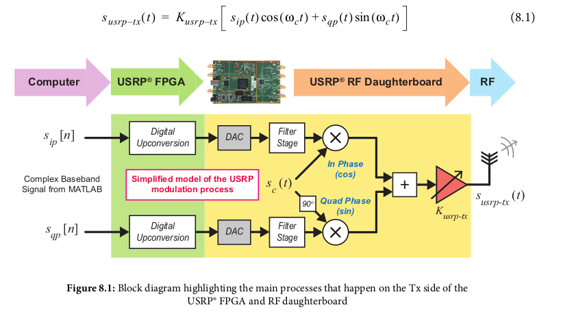
By default, the FPGA on the Tx side of the USRP® radio is configured to perform Digital Upconversion (DUC) to upconvert baseband IQ samples (transferred to the device from a host computer) to an IF. The samples are converted to continuous signals using a DAC, and then mixed with a quadrature RF carrier, performing AM-DSB-SC modulation
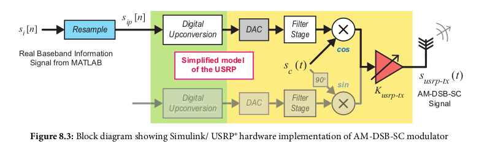
In simulink: 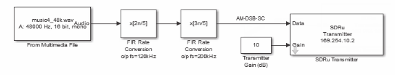
Can NOT be done with an envolope detector, as AM-DSB-SC does not contain a signal envolope!
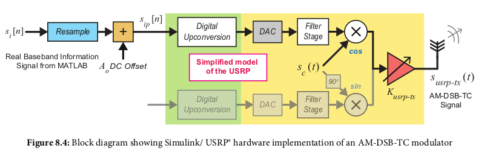
Same as DSB-SC except a DC offset added before mixed with carrier
In simulink: 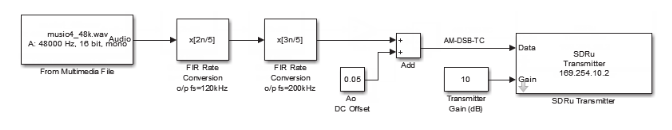
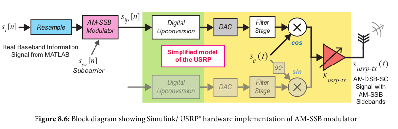
In simulink: 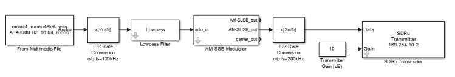
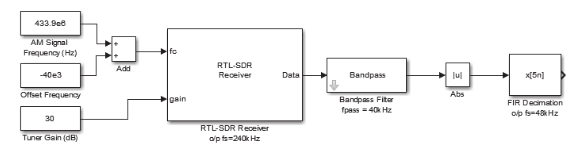 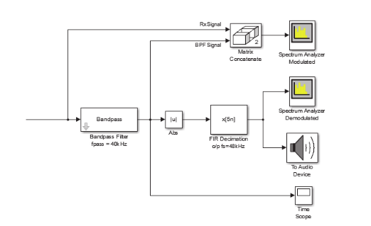 note the second diagram is the same as the first after the bandpass filter, with the output sent to audio and spectrum analyzers
AM-DSB-TC contains carrier components and has an information envolope, which is why using the envolope filter works (|u|). Again AM-DSB-SC cannot be demodulated used envolope filter. This is because the envolope filter cannot handle when the signal polarity flips.
When the demodulating carrier frequency or phase doesn't match the original modulated carrier, a frequency shift occurs with the result demodulated signal, and for audio this means the pitch will be shifted up or down, with a "Donald Duck or Chipmunk effect" 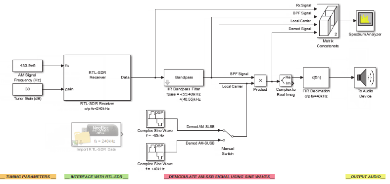
can use PLL or Costas instead of envolope filter 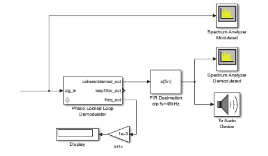 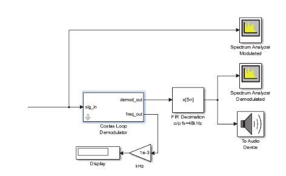
Split available bandwidth into channels so multiple information signals can be transmitted at once. Works by modulating the information signal onto its designated channel frequency band then adding them all together. This was used on landline phone networks to allow "tens of voice signals" on a single wire. Each customer was assigned a 3.4kHz band; the human voice usually has a bandwidth between 100Hz and 4kHz 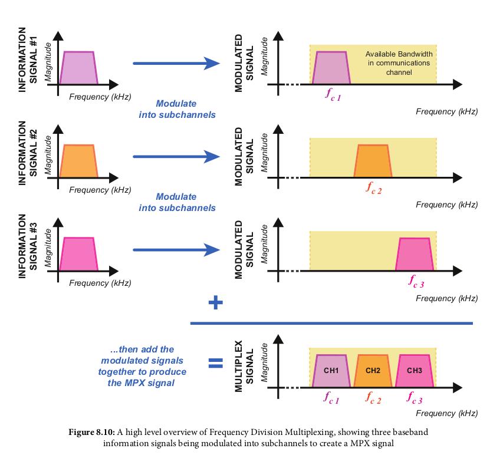
TX (modulation) On USRP: 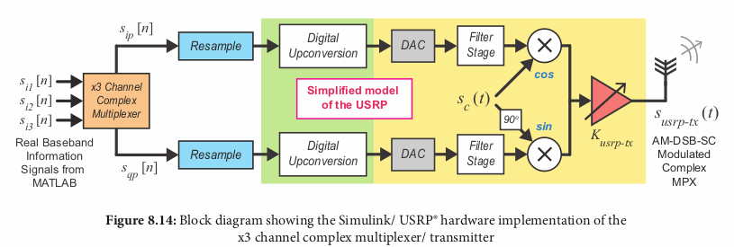 TX USRP in simulink: 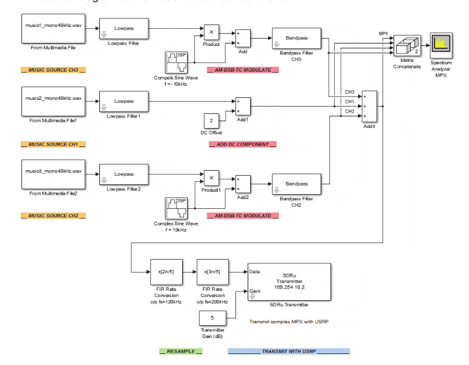
RX (Demodulation) on RTL-SDR: 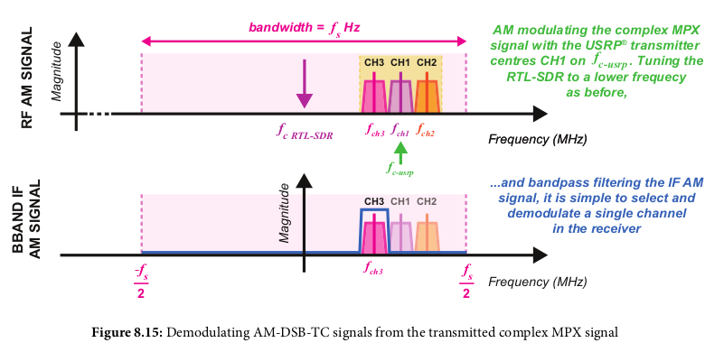 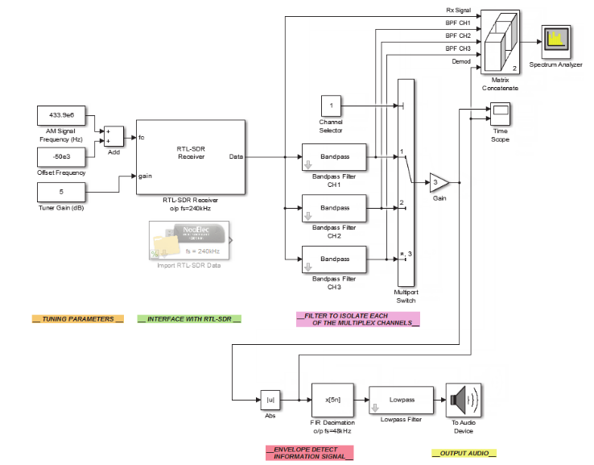